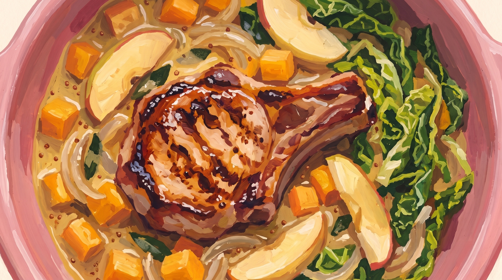

Pork chops with swede, savoy and mustard
a wide lidded casserole
50m: 20m prep + 30m cook
ingredients
1 tbsp rapeseed oil
4 pork chops
1 onion
1 small swede
2 eating apples
400ml chicken stock
2 tbsp wholegrain mustard
½ savoy cabbage
100ml crème fraîche
4 pork chops
1 onion
1 small swede
2 eating apples
400ml chicken stock
2 tbsp wholegrain mustard
½ savoy cabbage
100ml crème fraîche
seasoning
salt
black pepper
sage
black pepper
sage
method
- 1Season the chops and brown them in the oil, 3 minutes a side. Lift out.
- 2Soften the sliced onion and chopped sage for 5 minutes. Add the swede in small cubes, the apple wedges and stock. Cover and simmer for 15 minutes.
- 3Stir in the mustard, sit the chops on top, cover and cook for 10 minutes.
- 4Add the shredded cabbage and crème fraîche. Cover for 5 minutes, until the cabbage wilts. Season.